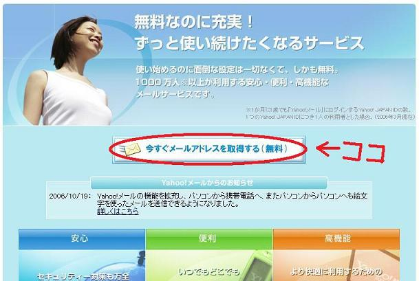
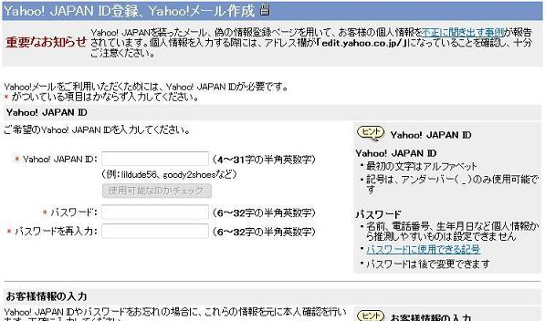
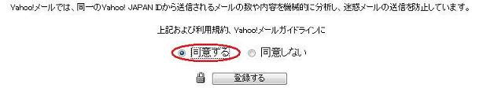
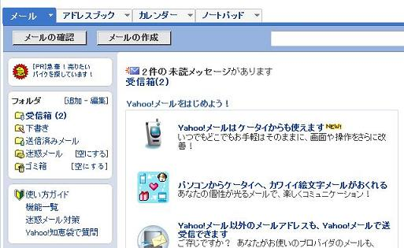

ポイントサイトでポイントをもらうには主に無料会員登録をしたり、
メールマガジンに登録したりします。そのときに、メールアドレスが必要になってきます。
そして、一度登録をすると別のサイトのメールマガジンなどにも登録されることがあります。
そうなると大量の迷惑メールが、送られてきてどれがどのメールなのかわからなくなります。
そうなったときのために、すぐに捨てれて、無料で利用できるフリーメールアドレスを
取得しておくことをおすすめします。登録も簡単ですのでぜひ登録してみてください。
Yahoo!メールに登録する
上のリンクをクリックして画面の中央にある
「今すぐメールアドレスを取得する」をクリックしてください。

↓のようなIDやパスワード、個人情報などの入力画面が開くので漏れがないように記入してください。

必須項目を入力したら、ガイドラインに同意するにチェックをして登録するをクリックしてください。

これで登録完了です。
簡単なのでぜひ取得してください。
